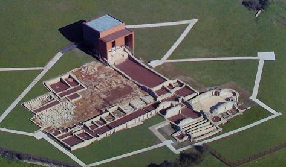
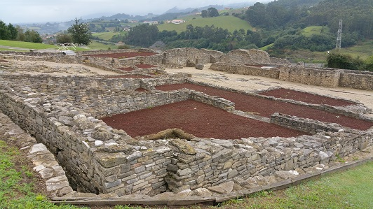
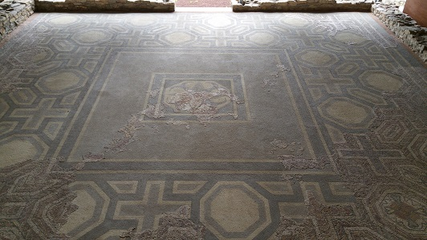

|
Se encuentra situada
en la Ruta de la Plata a su paso por el Concejo de Gijón.
La villa romana de Veranes, conocida desde antiguo como Torrexón de San
Pedro.

La visita a los restos arqueológicos de la villa se realiza a través de
un sendero con diferentes puntos de observación que nos aproximan a sus
estancias.
La villa se localiza a las afueras de Gijón. Se construyó en el siglo IV
sobre las ruinas de una vivienda anterior y continuó ampliándose hasta
el siglo V. Villa predominantemente agrícola. Los restos arqueológicos
que actualmente se pueden visitar en Veranes pertenecen a la pars
urbana, de cuya zona destaca el mosaico polícromo del salón u «oecus».
El lugar era conocido antiguamente por las ruinas de una iglesia
visigoda. Las investigaciones posteriores permitieron averiguar que esta
se enclavaba sobre una antigua villa romana.
Ver:
Video
|
 |
 |
|